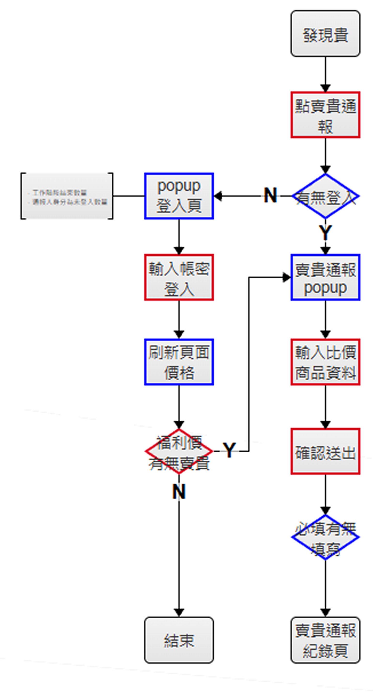
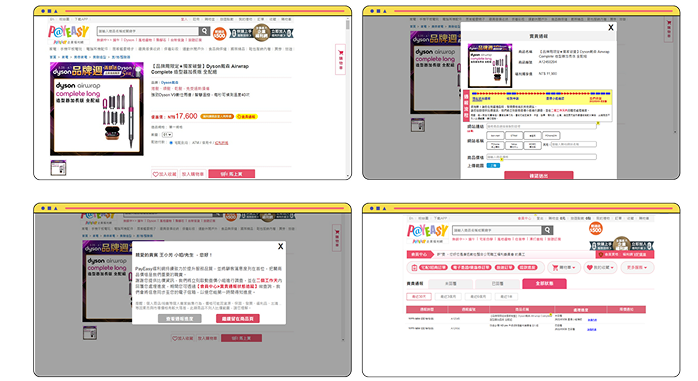

PORTFOLIO – PayEasy
新功能規劃，學習釐清利害關係與對齊目標
在電商維運職中逐步建立 PM 的思維框架
透過用戶與利害關係人訪談挖掘深層需求，避免產品流於表面功能
並能在真實情境評估後，果斷調整或否決不符價值的規劃，建立務實的產品判斷能力。。
「賣貴通報」需求深度評估｜成功避免錯誤開發，並找出真正的產品方向
SITUATION
需求來自高層的許願，而非用戶問題。
高層提出「賣貴通報」功能，希望企業的福委會員在購物時發現商品比外部平台貴，可一鍵通報，由前線即時議價，促進福利金使用意願。
但此流程牽涉議價速度、廠商配合度、客服進線。若未全面評估即投入，將造成極大的營運壓力。
TASK
在最短時間內判斷需求可行性與真實動機。
釐清這個功能的實際營運情境、跨部門影響，以及總經理提出此需求的核心動機，整合出更理想的建議。
ACTION
從情境推演開始落地，釐清場景
1.推演「賣貴通報」的實際流程與極端狀況
- 使用者通報 → 採購議價 → 平台調整價格 → 回覆使用者
- 討論通路差異、商品價格特性、促銷期間等不同情境
- 評估議價時程與極端結果是否導致使用者降低滿意度
2.跨部門訪談、還原真實作業
- RM：議價彈性受限於供應商條件，且需逐案等待回覆，難以支撐大量且即時的價格通報情境。
- CS：多數通報最終將以「無法調整價格」結案，預期會直接推高使用者抱怨量與客服進線量。
- OP/MKT：頻繁調價會削弱供應商合作意願，使商品池縮水，降低平台作為「員工福利方案」的整體競爭力與續約誘因。
核心結論：營運成本極高，且存在反效果風險。
找出長官真正的需求動機
釐清總經理需求源自期待平台能參考市占高的電商（如momo），而非通報功能本身。 深入理解後，提出替代方案：
- 先改善用戶體驗，從介面、效能等痛點著手。
- 召開workshop，召集前線與開發團隊一起同理使用者，商討多元服務平台的共識，讓福委平台不再只有購物。
RESULT
成功避免錯誤開發，並讓組織看到真正該前進的方向
最終主管理解風險與評估結果，決議不將功能送進開發，同時藉由釐清「深度需求」，成功將討論從單一功能導向，轉為改善體驗與提升平台效能，導向「多元綜合服務平台」的中長期產品策略。

